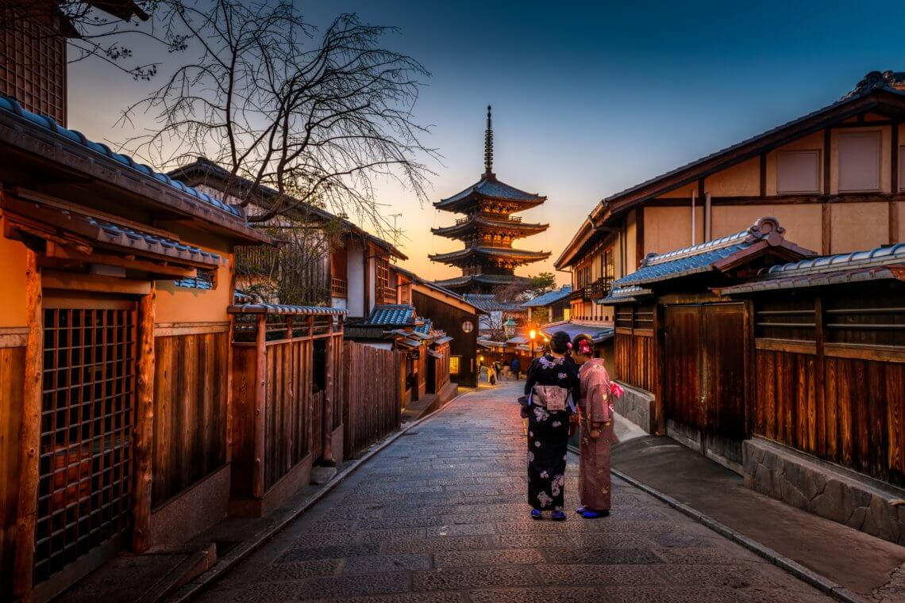

Hello, dear readers! It's Isa, and I'm thrilled to share my recent adventure in the enchanting city of Kyoto, Japan. Join me as I take you through the mesmerizing world of Japanese culture and tradition.
Arrival in Kyoto
My journey began as I stepped off the shinkansen (bullet train) in Kyoto. The moment I arrived, I was enveloped in the city's rich history and unique charm. Kyoto is a place where the old seamlessly blends with the new, and I was eager to explore every corner.

Temples and Shrines
Kyoto is often referred to as the "City of Ten Thousand Shrines." Visiting Kinkaku-ji, the Golden Pavilion, was a highlight of my trip. The stunning Zen temple, covered in gold leaf, shimmered in the sunlight, creating a breathtaking sight. I also explored Fushimi Inari Taisha, famous for its thousands of vibrant red torii gates that lead up to the sacred Mount Inari.
Traditional Tea Ceremony
No visit to Kyoto would be complete without experiencing a traditional Japanese tea ceremony. I had the privilege of participating in one at a local tea house. The meticulous preparation and graceful rituals involved in serving matcha tea left a lasting impression on me.
Kimono Experience
To fully immerse myself in the local culture, I tried on a beautiful kimono and strolled through the historic district of Gion. The experience made me feel like I had stepped back in time, and I even caught a glimpse of a maiko (apprentice geisha) on her way to an appointment.
Cuisine of Kyoto
Kyoto is also renowned for its culinary delights. I savored kaiseki, a traditional multi-course meal, and dined on exquisite sushi at a local restaurant. The flavors and presentation of each dish were a true work of art.

Cherry Blossom Season
Timing my visit during cherry blossom season was a stroke of luck. The blooming sakura trees transformed the city into a sea of pink and white. I spent tranquil moments in Maruyama Park, enjoying hanami (cherry blossom viewing) with locals and fellow travelers.
City Data
| Category | Fact |
|---|---|
| Location | Kyoto, Japan |
| Population | Approximately 1.46 million |
| Official Language | Japanese |
| Currency | Japanese Yen (¥) |
| Time Zone | Japan Standard Time (JST, UTC+9) |
| Climate | Four distinct seasons with cherry blossoms in spring and colorful foliage in autumn |